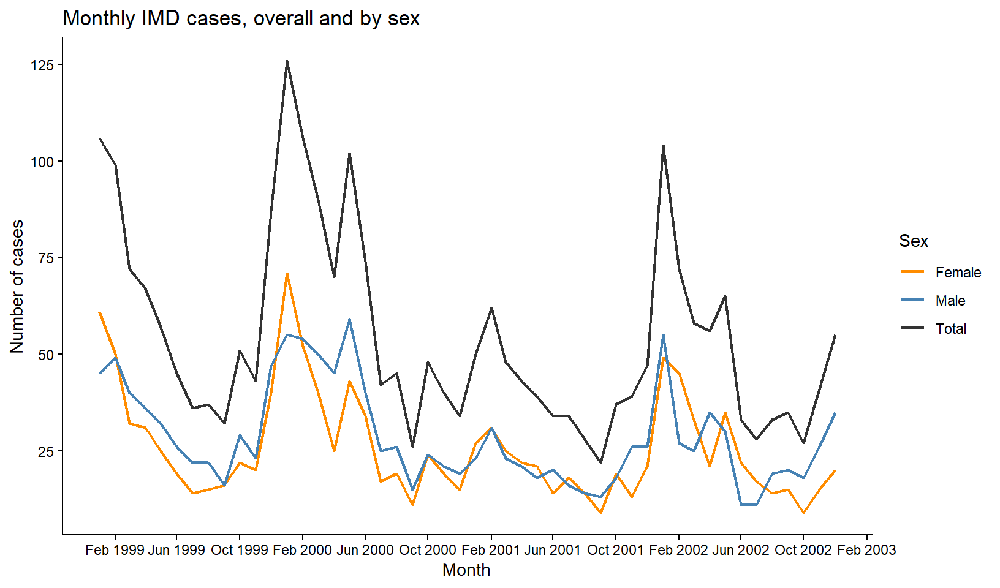
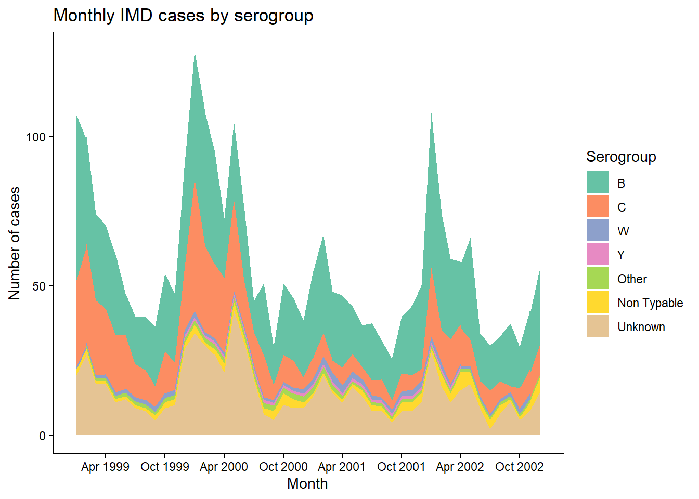

Lines - tracking trends
Session 5 practical exercises
Barplots are useful for categorical counts and combinations of those. When we account for four years - that is: four data points, the resulting graph can be adequate. Increase that number of data points, and it becomes increasingly difficult to read as well, so let’s start moving towards finer time scales and learn about useful geoms to assist us in our tasks.
Kassandra’s next plot request is about case trends overall and by sex. She is interested in learning more about disease seasonality and asks us to deliver a monthly trend line with the three categories.
Continue in your Session 5 script, where your data and libraries are already loaded.
Part 8 · Lines and Trends
Too many data points, the wrong way
Action — Count cases by key_date with count(), then plot x = key_date, y = n with geom_line().
Technically nothing is wrong here — you counted first, exactly like you are supposed to. And yet the result is a saw-toothed mess, close to unreadable. The problem is not that you forgot to aggregate, it is that you aggregated at the wrong resolution. Most single days have zero, one or two cases, and that day-to-day noise buries any real pattern underneath it.
NoteChoosing a time unit is not optional
A line chart needs one value per position on x, but which position is a choice you make, not something the data hands you. Four years of daily counts is too fine to read; four years of yearly counts (four points total) would be too coarse to say anything about seasonality. Monthly sits in between, and it is the resolution Kassandra actually needs to talk about seasonality.
Floor the date to build a monthly series
You already filtered out unknown sex values in earlier sessions when a table needed complete groups. We will do the same here, and be explicit about it: cases with an unrecorded sex are excluded from both the total and the by-sex lines, so that the two add up to exactly the same numbers when you compare them. Again, it’s an important decision to make at the institutional level when working on reports.
We can have daily counts thanks to key_date. We need lubridate to use that date to incorporate month variable in the data to count. As usual, many function could assist us, but this is the one we will be using today: floor_date(). It has two main arguments:
A
<date>vector as first argument. Within a tidy pipe, a date variableThe
unit = " "where you write the desired grouping, for example “week”, “month”, or “year”. If you also had time (h:m:s) in the date, you could use “hour”, or “minute”
The function takes the date and rounds it down to its nearest “floor” date. If we want months, that means setting all cases happening at any day of January 1999 to “1999-01-01”, the “floor date” of that month. If the unit is weeks, it does the same with every week’s Monday or Sunday (EU vs USA).
Since the output is still a real date, you get naturally ordered categories for free. More convenient, impossible.
Action — Create imd_monthly_sex: filter out missing sex, create a month column with floor_date(key_date, unit = "month"), then count(month, sex).
Action — Now create imd_monthly_total the same way, but without sex in count() — just count(month). Remember to filter out missing sex here too, so both tables describe exactly the same set of cases.
A trick: turn a summary into a third category
You now have two separate tables that both describe cases over time — one split by sex, one not. To plot them as three lines on the same chart with one shared legend, the cleanest way is to make “Total” look like a third value of sex, and stack both tables into one using bind_rows().
bind_rows() is a Tidy function that takes dataframes as arguments, and paste their rows together. There is one condition for it to work properly: they must have exactly the same variable in number, name and class.
WarningSilent mistakes
bind_rows() is one of those functions that can go wrong without you noticing at first glance.
If a variable exists only in one dataframe, it will get pasted and completed with NAs in the rows corresponding to the other object
If two variables have slightly different names, i.e.,
sexandSex, the function will fill in the empty spots with NAsIf variable class is different, the function will try to coerce one of the two to the other, with unknown results
Always double check the result of bind_rows() before assuming it worked because you did not get any error or warning
We need a new variable for the total count in order to bind together:
Action — Add a new column to imd_monthly_total: sex = "Total" — a fixed value, the same for every row, not derived from anything. Identical name and class.
Action — Combine both tables with bind_rows() into imd_monthly_sex_total.
Check imd_monthly_sex_total in your viewer. sex now has three values instead of two — "Male", "Female", and your fabricated "Total" — sitting in a single tidy column, ready for a single aes(color = sex).
Action — Plot your case trend with month on the x axis and number of cases in the y. Map the color to sex to have separate colors and the legend
Manual palette: choosing on your own
If we want custom colors, scale_color_brewer() would work here, but Brewer palettes assign colors automatically in a fixed order — you cannot tell it “Total must be black”. When a specific category needs a specific, deliberate color, you write the mapping yourself with scale_color_manual().
It takes more time and effort compared with predefined palettes, but it’s worth taking a moment to learn this important action. The function will use a single argument today: values. Inside, we will open a vector c() and include pairs of level = color arguments separated by commas, making sure all our categories are included.
This time, the code is on the house
Action — Add scale_color_manual(), with values set to a named vector including our three categories of sex. You can choose your colors, of course.
Notice, that when we were colouring shapes (bars or columns), we used scale fill function. Now that we’re colouring lines, we need to use scale color function.
Final plot - Trend by sex
Finnish the plot:
Action — Add scale_x_date() with 4-months date_breaks and date_labels in month-year with "%b %Y".
Action — Add a theme of your choice, and labs() for the axes, legend title and a report-ready title.
Part 9 · From line to area
A line is a bar in disguise
Think back to geom_bar()/geom_col() versus geom_line(). Both take the same kind of input — one value per position — and simply draw it differently: as a bar, or as a connected point. geom_area() is a third way of drawing that same idea: a line, with the space underneath it filled in.
Recover the code of the final plot of serogroup cases by year. We will turn it into an area plot of monthly cases, using floor_date() again. Copy this code to see for yourself, but don’t spend any more time on this - you still have exercises to do!
# Monthly series by serogroup
imd_monthly_serogroup <- imd %>%
mutate(
month = floor_date(key_date, unit = "month")
) %>%
count(month, serogroup)
# Final plot (2): stacked area by serogroup
serogroup_area <- imd_monthly_serogroup %>%
ggplot(aes(
x = month,
y = n,
fill = serogroup
)) +
geom_area() +
scale_fill_brewer(
palette = "Set2"
) +
scale_x_date(
date_breaks = "6 months",
date_labels = "%b %Y"
) +
labs(
x = "Month",
y = "Number of cases",
fill = "Serogroup",
title = "Monthly IMD cases by serogroup"
) +
theme_classic()
serogroup_area
By default, geom_area() stacks — each serogroup’s monthly count sits on top of the previous one, so the height of the whole stack at any given month is the national total for that month. Instead of seven crossing lines, you get one continuous silhouette, split into colored bands. The best of the bar and the best of the line.
Exercise Summary
Two graphs, two different problems solved. The first taught you a genuinely reusable trick: turning a separate summary into a fabricated category of the same variable, so bind_rows() and a single aes() can put it on equal footing with the real categories and, from there, scale_color_manual() to give a meaningful category its own deliberate color.
The second showed that bar, line and area are three faces of the same idea, and that switching from line to area is often the fix when too many crossing lines stop being readable. In the next excercise, the calendar itself becomes the subject of the plot, one day at a time.
| Function | Package | What it does |
|---|---|---|
floor_date() |
lubridate | Rounds a date down to the start of a given unit (day, month, year…) |
bind_rows() |
dplyr | Stacks two tables with matching columns into one |
scale_color_manual() |
ggplot2 | Assigns specific colors to specific category values, written by hand |
geom_area() |
ggplot2 | Like geom_line(), with the area underneath filled; stacks by default when fill is mapped |
Tip💡 Show solution — only after trying yourself!
# Load libraries
library(pacman)
p_load(rio, here, tidyverse)
# Import data
imd <- import(here("data", "clean", "IMD_Sample_Clean.rds"))
# The trap: daily resolution is too fine
imd %>%
count(key_date) %>%
ggplot(aes(
x = key_date,
y = n
)) +
geom_line()
# Monthly series by sex (unknown sex excluded)
imd_monthly_sex <- imd %>%
filter(!is.na(sex)) %>%
mutate(
month = floor_date(key_date, unit = "month")
) %>%
count(month, sex)
# Monthly total (same exclusion, so totals match Male + Female)
imd_monthly_total <- imd %>%
filter(!is.na(sex)) %>%
mutate(
month = floor_date(key_date, unit = "month")
) %>%
count(month) %>%
mutate(
sex = "Total"
)
# The trick: stack both tables into one
imd_monthly_sex_total <- bind_rows(
imd_monthly_sex,
imd_monthly_total
)
# Final plot (1): trend by sex, with a manual color scale
trend_by_sex <- imd_monthly_sex_total %>%
ggplot(aes(
x = month,
y = n,
color = sex
)) +
geom_line(
linewidth = 0.8
) +
scale_color_manual(
values = c(
"Total" = "grey20",
"Male" = "steelblue",
"Female" = "darkorange"
)
) +
scale_x_date(
date_breaks = "4 months",
date_labels = "%b %Y"
) +
labs(
x = "Month",
y = "Number of cases",
color = "Sex",
title = "Monthly IMD cases, overall and by sex"
) +
theme_classic()
# Save the plot
ggsave(
plot = trend_by_sex,
filename = "monthly_trend_sex.png",
path = here("output"),
units = "in",
width = 7,
height = 5,
dpi = 300
)
# Monthly series by serogroup
imd_monthly_serogroup <- imd %>%
mutate(
month = floor_date(key_date, unit = "month")
) %>%
count(month, serogroup)
# Final plot (2): stacked area by serogroup
serogroup_area <- imd_monthly_serogroup %>%
ggplot(aes(
x = month,
y = n,
fill = serogroup
)) +
geom_area() +
scale_fill_brewer(
palette = "Set2"
) +
scale_x_date(
date_breaks = "6 months",
date_labels = "%b %Y"
) +
labs(
x = "Month",
y = "Number of cases",
fill = "Serogroup",
title = "Monthly IMD cases by serogroup"
) +
theme_classic()